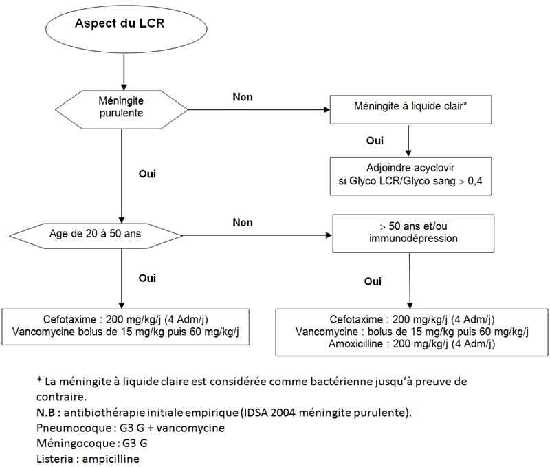

Bienvenue Sur Medical Education
Méningite aiguë bactérienne de l'adulte
Spécialité : infectieux / neurologie /
Points importants
- Les méningites bactériennes sont un motif fréquent de consultation aux urgences et d'admission en unité de soins intensifs
-
Il s'agit d'une urgence médicale
-
-
-
-
-
-
-
-
-
-
-
 score de Glasgow < 8)
score de Glasgow < 8) -
-
Présentation clinique / CIMU
SIGNES FONCTIONNELS
- La méningite bactérienne provoque de graves réactions qui se manifestent généralement en l'espace de quelques heures.
Elle associe de façon plus ou moins complète les signes suivants
-
Signes infectieux :
- fièvre
- frissons
-
Syndrome méningé, comportant :
- violents maux de tête (céphalées), classiquement en casque
- vomissements en jet
- photophobie (éblouissement douloureux par la lumière)
- phonophobie (sons douloureux)
- raideur méningée (signe de Kernig et signe de Brudzinski)
- Constipation
-
Troubles de la conscience parfois :
- torpeur
- obnubilation
- voire coma profond d'emblée
-
Purpura éventuel :
- tâches rouge-violacées ou ecchymoses) lors des méningites méningococciques
-
Mais les signes ne sont pas toujours aussi typiques :
- chez le nourrisson [et particulièrement le nouveau né] où toute altération brutale de l'état général doit faire évoquer le diagnostic et où le tableau clinique peut être dominé par une hypotonie (méningite dite à nuque molle)
- chez la personne âgée, la méningite peut se révéler par une confusion fébrile, c'est dire l'importance de la prise de température devant tout syndrome confusionnel à cet âge
-
Parfois des signes d'encéphalite s'ajoutent :
- somnolence
- confusion
- épilepsie
- déficit sensitivomoteur (paralysie ou paresthésie)
- on parle alors de méningo-encéphalite
-
Particularités :
-
chez l'enfant :
-
les symptômes chez les bébés comportent :
- réveil difficile
- forte fièvre
- irritabilité
- perte d'appétit
- vomissement
- pleurs aigus ou gémissements, en particulier quand on le prend dans les bras (hyperesthésie)
- teint pâle ou blafard
- fièvre, maux de tète, hypotonie, sensibilité à la lumière
- éruption de taches violacées ou ecchymoses
- fontanelle tendue
-
les symptômes chez les bébés comportent :
- par contre, chez le nourrisson une raideur de la nuque est très rarement présente
-
chez la personne âgée :
- les signes sont fréquemment absents ou présents à minima
-
les symptômes pouvant faire évoquer une méningite chez les sujets âgés sont :
- troubles du comportement
- convulsions
- céphalées
-
chez l'enfant :
CONTEXTE
Terrain
- Immunodépression, absence de vaccination
Antécédents
- Antécédents de traumatisme crânien (brèche ostéo durale)
- Chirurgie de la base du crâne
- Méningite
- Otite, sinusite
- Pneumopathie associée
Facteurs de risque
- Rhinorrhée
- Asplénie
- Infection à VIH
- Notion d'épidémie
EXAMEN CLINIQUE
Fièvre
Syndrome méningé
- Raideur de nuque
- Signe de Kernig
- Signe de Brudzinsky
- Phono ou photophobie
- Vomissements en jet
- Céphalées
Troubles neurologiques
-
Rechercher des signes de localisation :
- une confusion
- obnubilation
- trouble de vigilance voire coma pouvant signer une méningo encéphalite
Purpura simple ou nécrotique extensif
- Signes frustres et trompeurs aux âges extrêmes
Signes ORL
- Hypoacousie
- Otalgie
- Otorrhée
- Fosses nasale (écoulement)
-
Voire avis ORL spécialisé :
- si drainage d'un foyer collecté sinusien
- si paracentèse dans le cadre d'une otite moyenne aigue
EXAMENS PARACLINIQUES SIMPLES
- ECG
- SpO2
- Glycémie
CIMU
- Tri 1 à 3 selon la gravité clinique
Signes paracliniques
BIOLOGIQUE
Ponction lombaire avec analyse biochimique, cytologique et microbiologique du LCR
- Prélever un minimum de trois tubes de LCR (volume total : 40 à 100 gouttes, soit 2 à 5 mL chez l'adulte ; 40 gouttes, soit 2 mL chez l'enfant) avec examen direct et antibiogramme (associant l'étude de la CMI pour l'amoxicilline, le céfotaxime et la ceftriaxone)
- PCR sur le LCR si examen direct négatif
-
Contre indications PL :
- signes d'engagement cliniques (mydriase unilatérale, hoquet, trouble ventilatoire, mouvements d'enroulement, instabilité hémodynamique) ou sur l'imagerie cérébrale
- anomalie connue de l'hémostase
- traitement anticoagulant efficace
- suspicion clinique d'un trouble majeur de l'hémostase (saignement actif)
- instabilité hémodynamique
-
Les analyses cytologique et biochimique montrent classiquement :
- une cellularité importante (> 1000 /mm3) à prédominance de polynucléaires neutrophiles
- une glycorachie < 0,4 g/L (2 mmoL)
- un rapport glycorachie/glycémie < 0,3
- une protéinorachie > 1g/L
Hémoculture
Dosage du lactate dans le LCR
- Une valeur au-dessous de 3,2 mmol/L rend très peu probable le diagnostic de méningite bactérienne
Dosage de la procalcitonine sérique
- Une valeur au-dessous de 0,5 ng/mL rend très peu probable le diagnostic de méningite bactérienne
Examens non spécifiques
- Polynucléose
- Elévation de la C-Reactive Proteine sanguine
Permettent simplement d'orienter vers une étiologie bactérienne
IMAGERIE
Au moment de la prise en charge initiale d'une méningite purulente, les indications d'imagerie cérébrale doivent rester très limitées.
La réalisation d'un scanner avant la ponction lombaire expose au risque de retarder la mise en route de l'antibiothérapie.
TDM cérébrale, si :
- les signes de localisation neurologiques
-
les troubles de vigilance mesurés par un score de Glasgow ≤ 11 :
- les crises épileptiques récentes ou en cours, focales ou généralisées après l'âge de cinq ans, seulement si hémicorporelles avant cet âge
- L'imagerie cérébrale doit être systématique si autre bactérie que méningocoque ou pneumocoque
Fond d'oeil non indispensable (retard d'apparition de l'oedème papillaire)
Diagnostic étiologique
- Chez l'enfant au-delà de 1 an et jusqu'à l'âge de 24 ans, le méningocoque et le pneumocoque représentent environ 95% des cas
- Au-delà de 24 ans : pneumocoque (50 à 70%), méningocoque, listeria monocytogenes, haemophilus influenzae, streptocoque du groupe B
Streptococcus pneumoniae ou pneumocoque
- Antécédents de traumatisme crânien, de chirurgie de la base du crâne, de méningite
- Rhinorrhée
- Début brutal
- Présence de signes neurologiques focaux
- Otite, sinusite ou pneumopathie associée, asplénie, VIH
Neisseria meningitidis ou méningocoque
- Notion d'épidémie
- Saison hivernale
- Purpura
- Absence de signes neurologiques focaux
Listeria monocytogenes
- Age > 50ans
- Grossesse
- Immunodépression (corticothérapie, myélome)
- Signes de rhombencéphalite avec atteinte des paires crâniennes
- LCR peu trouble avec formule panachée
Haemophilus influenzae
- Age < 5 ans
- Absence de vaccination
Méningite à liquide clair
-
Listériose neuroméningée :
- le syndrome infectieux initial est d'intensité variable volontiers modéré
- la présentation clinique est souvent celle d'une méningo-encéphalite survenant chez des patients immunodéprimés (hémopathies, cancer, corticothérapie, alcoolisme chronique..) et les femmes enceintes
- fréquentes paralysies des paires crâniennes
-
PL :
- cellularité du LCR variable, souvent > 1000 cellules/mm3. formule est souvent panachée
- protéinorachie très variable, le plus souvent d'environ 1 g/L, rarement supérieure à 3 g/L
- hypoglycorachie dans la moitié des cas
- l'examen direct du LCR est souvent négatif mais la culture est souvent positive (souvent tardivement après plus de 3 jours de culture)
-
Méningo-encéphalite herpétique :
- évoquer devant des signes encéphalitiques fébriles évoluant sur quelques jours
-
le tableau clinique initial associe typiquement :
- ne confusion
- une désorientation temporo-spatiale
- des troubles du comportement simulant un tableau psychiatrique aigu
- des signes neurologiques d'atteinte fronto-temporale (hallucinations olfactive, auditive ou visuelle), et des crises convulsives
- fièvre, volontiers élevée, toujours présente
-
PL :
- liquide hyper cellulaire, lymphocytaire et contient parfois quelques hématies
- protéinorachie le plus souvent < 2 g/L
- glycorachie est normale
- TDM peut être normal au début et montre classiquement des plages d'hypodensité temporales prenant le contraste en leur centre
- L'IRM montre de façon plus précoce des hyper signaux temporaux
Deux examens permettent d'orienter le diagnostic étiologique mais ne doivent pas retarder le traitement : la recherche d'interféron alpha et surtout la détection du virus dans le LCR par PCR.
Le traitement : aciclovir (Zovirax®) à la dose de 10 mg/kg toute les 8 heures pendant 10 jours
-
Tuberculose :
- méningite hypoglycorachique
- franchement hyperproteinorachique (> 2 g/L)
- lymphocytaire
- tableau encéphalitique
-
si absence d'hypoglycorachie, les arguments en faveur :
- évolution le plus souvent subaiguë
- signes de méningite basilaire
- hyponatrémie
- imagerie cérébrale : arachnoïdite de la base dans plus de la moitié des cas, des infarctus cérébraux et surtout une dilatation ventriculaire, très fréquente initialement ou dans les premiers jours de traitement
-
Etiologies rares :
- virus (Herpes simplex virus,coxsackies, echovirus, Herpes virus 6, HIV, Adénovirus, Epstein Barr virus, cytomégalovirus, Myxovirus, arbovirus, rage).
- bactéries (listériose, tuberculose, Rocky mountain spotted fever, fièvre boutonneuse méditerranéenne, fièvre Q, syphilis, leptospirose, maladie de Lyme, mycoplasme, brucellose)
- champignons (cryptococcose, coccidioiomycose, histoplasmose, blastomycoses), parasites (cysticercose, trypanosomiase, schistosomiase, trichinose)
Diagnostic différentiel
- Leur évocation ne doit jamais retarder la mise en route d'un traitement antibiotique si l'on a un doute
MENINGITES VIRALES
- Symptomatologie méningée + signes d'atteinte muqueuse : rhinorrhée, toux, conjonctivite
- Les céphalées sont souvent très importantes sans aucun rapport avec la bénignité de cette pathologie
ENCEPHALITES
- Syndrome méningé + manifestations centrales
- L'encéphalite herpétique est une urgence thérapeutique, au même titre que les méningites bactériennes
- Certaines présentations atypiques peuvent entraîner l'association du traitement antiherpétique avec l'antibiothérapie, dans l'attente du diagnostic précis
- La confusion peut se faire essentiellement avec les méningites à liquide clair (Listeria, BK)
ABCES CEREBRAUX
- Symptomatologie surtout focalisée, simulant une tumeur
- Peuvent néanmoins se compliquer d'une méningite bactérienne
MENINGITES PARASITAIRES
- Surtout les infections opportunistes au cours du sida : toxoplasmose, cryptococcose
- La TDM cérébrale est l'examen clé pour le diagnostic de la toxoplasmose
- L'examen direct du LCR est celui qui permet le diagnostic de la cryptococcose
HEMORRAGIES MENINGEES
- Elles peuvent être fébriles
- Le scanner cérébral permet de préciser le diagnostic
NEUROPALUDISME
- Peut enfin simuler une méningite bactérienne, surtout à méningocoque, compte tenu de la similitude des zones tropicales à risque : ce diagnostic différentiel peut être posé à l'occasion d'un retour de pays tropical
Traitement
TRAITEMENT PREHOSPITALIER/INTRAHOSPITALIER
Stabilisation initiale
- Surélévation de la tête à 20-30°
- Voie veineuse périphérique
- Remplissage au NaCl 0,9% en cas d'instabilité hémodynamique
- Oxygénothérapie voire sédation assistance respiratoire mécanique si défaillance respiratoire
- Lutte contre HTIC ou Engagement cérébral par Mannitol en bolus unique (200mL de Mannitol 20% en 20 min)
- Lutte contre désordres hydro-électrolytiques
- Antibiothérapie urgente dès constatation LCR trouble ou purpura extensif. Faire des hémocultures avant l'antibiothérapie (la précocité du traitement antibiotique et symptomatique conditionne directement la mortalité et les séquelles neurologiques et/ou auditives fréquentes chez les survivants)
Suivi du traitement
- Adapter le remplissage en fonction de la PA
- Catécholamines si défaillance septique (dopamine)
- Adaptation des apports en fonction des désordres hydro électrolytiques
- Contrôle et prévention des convulsions
- Contrôle de la fièvre
-
Traitement portes d'entrée :
- surtout ORL: drainage sinusite
- paracentèse
-
Prophylaxie :
- déclaration obligatoire (rapidement)
- chimioprophylaxie des sujets contact
- vaccination des sujets contact pour Méningo A et C
MEDICAMENTS
Antalgiques/ antipyrétiques
- Type paracétamol 1g/6h en IV
Antibiothérapie avant la PL, si
- Purpura fulminans
- Prise en charge hospitalière ne pouvant pas être réalisée dans les 90 min
- Contre-indication à la PL
35% des pneumocoques dans les méningites de l'adulte sont I (0,1
-
hospitalisation ou traitement par les ß lactamines dans les 6 mois précédents -
immunodépression -
porte d'entrée ORL -
profession exposée => association C3G + Vanco
-
Pneumocoque (CG+) : - céfotaxime (Claforan®) 300 mg/kg/j IV en 4 perfusions ou en continue avec dose de charge de 50 mg/kg sur 1h
-
ou ceftriaxone (Rocéphine®) 100 mg/kg/j IV en 1 ou 2 perfusions -
± vancomycine 40-60 mg/kg/j en 4 perfusions ou en continue avec dose de charge de 15 mg/kg sur 1 h
-
Méningocoque (CG-) : - céfotaxime (Claforan®) 200mg/kg/j IV en 4 perfusions ou en continue avec dose de charge de 50 mg/kg sur 1h
-
ou ceftriaxone (Rocéphine®) 75 mg/kg/j IV en 1 ou 2 perfusions
-
Listeriose (BG+) : -
-
-
H. Influenzae (BG-) : -
céfotaxime (Claforan®) 200 mg/kg/j IV en 4 perfusions ou en continue avec dose de charge de 50mg/kg sur 1h -
ou ceftriaxone (Rocéphine®) 75 mg/kg/j IV en 1 ou 2 perfusions
-
-
E.Coli (BG-) : - céfotaxime (Claforan®) 200 mg/kg/j IV en 4 perfusions ou en continue avec dose de charge de 50 mg/kg sur 1h
-
ou ceftriaxone (Rocéphine®) 75 mg/kg/j IV en 1 ou 2 perfusions
-
M Tuberculosis : - quadrithérapie
-
Lyme : - ceftriaxone 2 g/j IV
-
Neurosyphilis : - pénicilline G 20 M UI/j en 6 inj
-
Staphylocoque (post chirurgical) : - céfotaxime (Claforan®) 300mg/kg/j IV en 4 perfusions ou en continue avec dose de charge de 50 mg/kg sur 1h
-
+ fosfomycine 200 mg/kg/j en 4 perf IV ou
-
Pas d'argument pour une listériose : - céfotaxime (Claforan®) 300 mg/kg/j IV en 4 perfusions ou en continue avec dose de charge de 50 mg/kg sur 1h
-
ou ceftriaxone (Rocéphine®) 100 mg/kg/j IV en 1 ou 2 perfusions
-
Arguments pour une listériose : - céfotaxime (Claforan®) 300 mg/kg/j IV en 4 perfusions ou en continue avec dose de charge de 50mg/kg sur 1h
-
ou ceftriaxone (Rocéphine®) 100 mg/kg/j IV en 1 ou 2 perfusions -
+ amoxicilline (Clamoxyl®) 200 mg/kg/j IV en 4 perfusions ou en continue -
+ gentamicine (Gentalline®) 3 à 5 mg/kg/j en 1 perfusion unique journalière
- Amoxicilline (Clamoxyl®) 200 mg/kg/j IV en 4 perfusions ou en continue
-
+ gentamicine (Gentalline®) 3 à 5 mg/kg/j IV en 1 perfusion unique journalière -
+ aciclovir 30 mg/kg/j IV
- S'oppose à la réaction inflammatoire responsable de l'oedème cérébral et des phénomènes de vascularites compliquant les méningites purulentes
-
Dexaméthasone 0,15 mg/kg toutes les 6 heures pendant 4 jours indiquée immédiatement avant ou de façon concomitante à la première injection d'antibiotique si : -
méningite à pneumocoque ou méningocoque chez l'adulte -
diagnostic présumé de méningite bactérienne sans certitude microbiologique en particulier si : -
indication d'une imagerie cérébrale retarde la PL -
LCR trouble -
examen direct négatif mais forts arguments biologiques de méningite bactérienne
-
-
-
Intraveineuse afin d'abaisser la glycémie en dessous de 1,5 g/L en cas de sepsis sévère
Surveillance
CLINIQUE
- PA, FC, conscience, raideur méningée, T°, SpO2, FR, examen cutané
PARACLINIQUE
- PL à 48/72h de traitement si évolution défavorable après imagerie cérébrale (empyème ou complication intracérébrale)
- PL de contrôle à 48h chez tous les patients présentant une méningite à pneumocoque avec une CMI de la céphalosporine utilisée > 0,5mg/L
-
Imagerie cérébrale si :
- survenue de signes neurologiques nouveaux (convulsions, paralysie, céphalées, vision modifiée)
- persistance inexpliquée au-delà de 72h après le début du traitement d'une fièvre > 38,5°C, de troubles de conscience, de céphalées importantes
Devenir / orientation
CRITERES D'ADMISSION
- Toute méningite aigue bactérienne implique une hospitalisation initiale en milieu hospitalier avec surveillance rapprochée
-
Hospitalisation en réanimation si :
- défaillance hémodynamique
- purpura fulminans
-
Glasgow < 9
- signes neurologiques focaux
- signes de souffrance du tronc cérébral
- état de mal convulsif
Algorithme
- Aglorithme 1 : méningites bactériennes
_676 Algorithme Algorithme 1 : méningites bactériennes
- Aglorithme 2 : méningites bactériennes
 _677 Algorithme Algorithme 2 : méningites bactériennes
Bibliographie
- 17e conférence de consensus en thérapeutique antiinfectieuse : prise en charge des méningites bactériennes aigues communautaires (à l'exclusion du nouveau-né) dans Médecine et Maladies infectieuses, SPILF 2009 ; 39 : 145-210
- Van de Beek D et al. Community-acquired bacterial meningitidis in adults. N Engl J Med 2006 ; 354 : 44-53
- Tunkel AM et al. Practice Guidelines for the management of bacterial meningitidis. Clin Infect Dis 2004 ; 39 : 1267-84
- Cremieux AC. Du bon usage des antibiotiques 2009. Editions Doin
Auteur(s) : Guillaume DER SAHAKIAN, Wahid BOUIDA